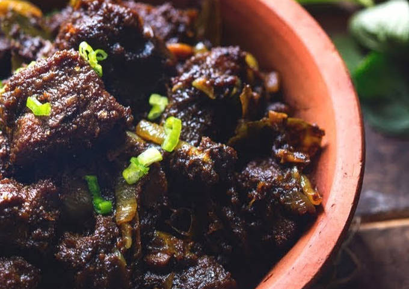

Kala Bhuna

Description:
In Bengali, the word kala or kalo means black and bhuna means deep fry. Kala bhuna gets its name from its appearance, as the meat goes blackish during a long process of deep frying it with a plenty of spices. It has become popular also in other Bangladeshi cities like Sylhet, Khulna, Dhaka etc.
Ingredients:
- raw cumin 1 tsp
- nutmeg 1/4
- mace 2 pcs
- cloves 6 pcs
- black pepper 1 tsp
- green cardamom 6 pcs
- cinnamon 3 pcs
- yellow mustard seeds 1 tsp
Steps:
- Add oil, meat, salt , red chili powder , turmeric powder, coriander , garlic ginger paste , sliced onion , green chili, mustard oil , dark soy sauce , mace , cinnamon , cardamom , cloves , black pepper, bay leaves , plain yogurt and 1 tsp sugar and saute for 5-10 min.
- Then add fried onion and cover it to cook for 3 hrs or you can put them inside a pressure cooker and cook for 20-30 min.
- Once cooked then keep stirring until all water dries up.
Tempering:
- Heat oil in another fry pan, add mustard oil, ghee, green chili .
- Add cooked beef and stirring continuously.
- Next add kala vuna masala mix
- Turn off flame and transfer to a serving plate. Garnish with fried onion.
- Serve with steamed rice or paratha or ruti.